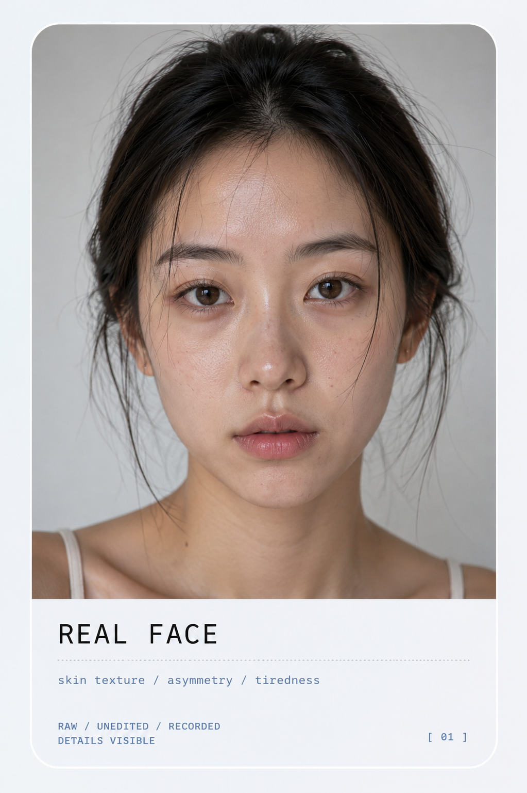

03 / SIMULATION
The Simulated Face
A face that looks real, but is algorithmically constructed.
Beauty filters do not simply improve the photograph. They produce a simulated version of the face: smoother, brighter, more symmetrical and more aligned with platform beauty standards.
The filtered face appears natural, but it is constructed through layers of correction. In this process, photography moves away from recording reality and becomes a system for manufacturing an idealised self-image.
CONTINUE ANALYSIS →
REAL FACE
skin texture / asymmetry / tiredness
RAW / UNEDITED / RECORDED DETAILS VISIBLEThe power of beauty filters lies in their realism. The filtered image still appears photographic, but the face has already been reconstructed.
Skin texture is softened, facial contours are refined and makeup is intensified. The result is not simply a better photograph, but a simulated version of the self.
THEORETICAL FRAME
Jean Baudrillard argues that simulation can produce images that no longer simply represent reality, but replace it with a constructed version of the real. The filtered face works in this way: it looks believable, while gradually displacing the unedited face.
Baudrillard, 1994